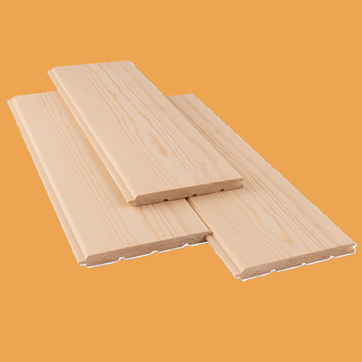
Board - Tongue and Groove from Pine and Larch: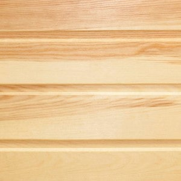
Grade "Extra" represents planks with a minimal number of knots, absence of resinous and dark stains, uniform coloring, and no defects. Thickness 12/14 (mm) Width 115/140 (mm) Length 2.0/3.0/4.0 (meters) Price per m3 - 960.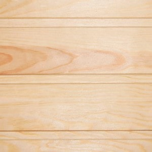
Grade "A" is characterized by a low number of knots, minimal defects, and uniform coloring. Thickness 12/14 (mm) Width 115/140 (mm) Length 2.0/3.0/4.0 (meters) Price per m3 - 825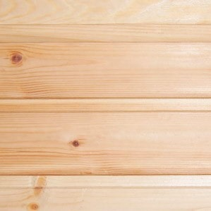
Grade "B" has a number of acceptable defects. The surface may have cracks, dents, holes, knots, resin pockets, and up to 10% blue stain is permissible. Thickness 12/14 (mm) Width 115/140 (mm) Length 2.0/3.0/4.0 (meters) Price per m3 - 560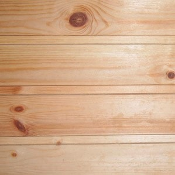
Grade "C" has a greater number of defects, such as large knots, scratches, cracks, various deviations in color, and crooked boards. Thickness 12/14 (mm) Width 115/140 (mm) Length 2.0/3.0/4.0 (meters) Price per m3 - 425 Grade "D" has many defects, such as large knots, size and shape inconsistencies, and uneven coloring.
Thickness 12/14 (mm) Width 115/140 (mm) Length 2.0/3.0/4.0 (meters) Price per m3 - 265
Grade "D" has many defects, such as large knots, size and shape inconsistencies, and uneven coloring.
Thickness 12/14 (mm) Width 115/140 (mm) Length 2.0/3.0/4.0 (meters) Price per m3 - 265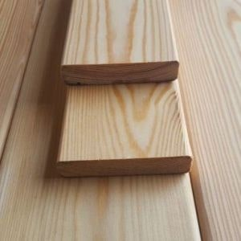
Board - Planken from Pine and Larch: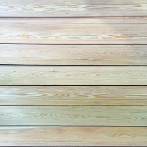
Grade "Extra" is distinguished by excellent quality and a beautiful appearance, with a uniform texture. Thickness 20 (mm) Width 90/120/140 (mm) Length 2.0/3.0/4.0 (meters) Price per m3 - 935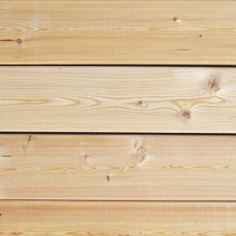
Grade "A" has a beautiful appearance and excellent quality. It may have a small number of knots, which can either be filled or cut out. Thickness 20 (mm) Width 90/120/140 (mm) Length 2.0/3.0/4.0 (meters) Price per m3 - 800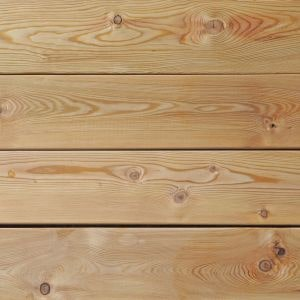
Grade "B" has minor defects, such as small knots or irregularities in texture. Thickness 20 (mm) Width 90/120/140 (mm)Length 2.0/3.0/4.0 (meters) Price per m3 - 535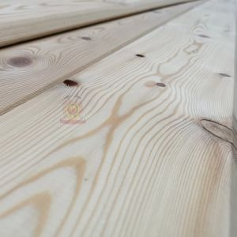
Grade "C" has more noticeable defects, such as larger knots, irregularities in texture, or color changes. Thickness 20 (mm) Width 90/120/140 (mm) Length 2.0/3.0/4.0 (meters) Price per m3 - 400 Grade "D" has the most defects, such as larger knots, cracks, or rot. Thickness 20 (mm)
Width 90/120/140 (mm) Length 2.0/3.0/4.0 (meters) Price per m3 - 240
Grade "D" has the most defects, such as larger knots, cracks, or rot. Thickness 20 (mm)
Width 90/120/140 (mm) Length 2.0/3.0/4.0 (meters) Price per m3 - 240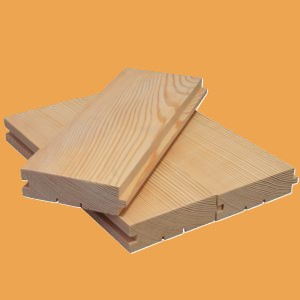
Floor Board from Pine and Larch: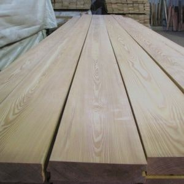
Grade "Extra" has a uniform texture and a distinctly expressed natural pattern, characterized by the absence of knots and other defects. Thickness 28/34 (mm) Width 140 (mm) Length 2.0/3.0/4.0 (meters) Price per m3 - 960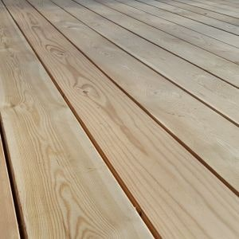
Grade "A" has a uniform texture, but may contain a small number of minor knots and other defects. Thickness 28/34 (mm) Width 140 (mm) Length 2.0/3.0/4.0 (meters) Price per m3 - 825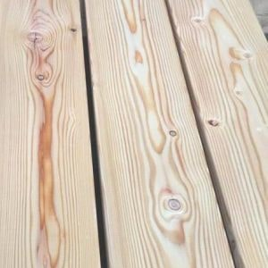
Grade "B" has a more pronounced natural pattern and more knots, and may also contain small cracks and other defects. Thickness 28/34 (mm) Width 140 (mm) Length 2.0/3.0/4.0 (meters)Price per m3 - 560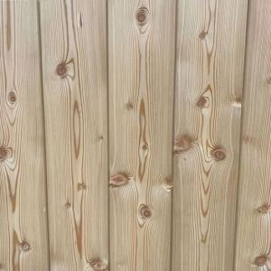
Grade "C" has a pronounced natural pattern, more knots, and also small cracks and other defects, which do not affect the quality. Thickness 28/34 (mm) Width 140 (mm) Length 2.0/3.0/4.0 (meters) Price per m3 - 425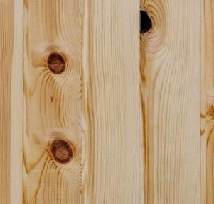
Grade "D" boards of this class are of quite low quality, as any defects up to thirty percent of the surface are allowed.Thickness 28/34 (mm) Width 140 (mm) Length 2.0/3.0/4.0 (meters)Price per m3 - 265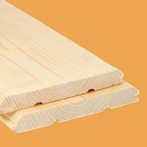
Timber Imitation from Pine and Larch: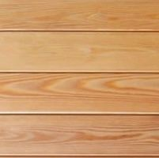
Grade "Extra" is distinguished by excellent exterior finish, smooth surface, and the absence of defects in the wood structure.Thickness 20 (mm) Width 140 (mm) Length 2.0/3.0/4.0 (meters) Price per m3 - 960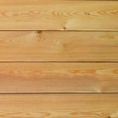
Grade "A" has minor defects in the wood structure. Thickness 20 (mm) Width 140 (mm) Length 2.0/3.0/4.0 (meters)Price per m3 - 825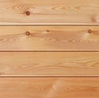
Grade "B" has some defects in the wood structure, such as small knots or irregularities. Thickness 20 (mm) Width 140 (mm) Length 2.0/3.0/4.0 (meters)Price per m3 - 560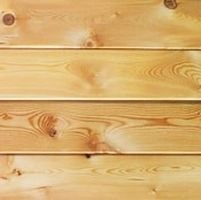
Grade "C" has more noticeable defects in the wood structure, such as large knots or cracks. Thickness 20 (mm) Width 140 (mm) Length 2.0/3.0/4.0 (meters)Price per m3 - 425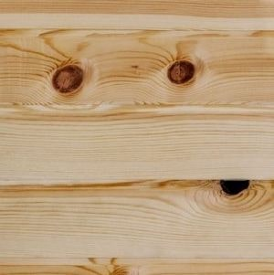
Grade "D" has the highest number of defects in the wood structure. Thickness 20 (mm) Width 140 (mm) Length 2.0/3.0/4.0 (meters) Price per m3 - 265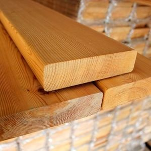
Terrace Board from Pine and Larch: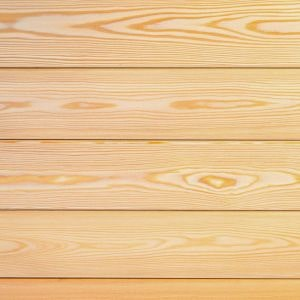
Grade "Extra" has a uniform color, beautiful texture, and a smooth surface. Thickness 28 (mm) Width 120/142 (mm) Length 2.0/3.0/4.0 (meters) Price per m3 - 935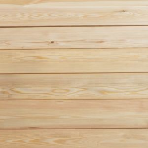
Grade "A" has high quality; however, it may contain some defects, such as small knots or branches. Thickness 28 (mm) Width 120/142 (mm) Length 2.0/3.0/4.0 (meters) Price per m3 - 800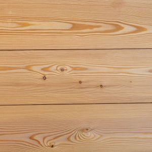
Grade "B" has a more pronounced texture and also a greater number of defects compared to the previous grades. Thickness 28 (mm) Width 120/142 (mm) Length 2.0/3.0/4.0 (meters) Price per m3 - 535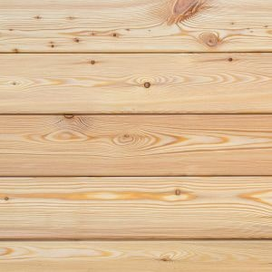
Grade "C" has low quality and a greater number of defects. It may have some unevenness, larger knots and branches, and also an uneven color. Thickness 28 (mm) Width 120/142 (mm) Length 2.0/3.0/4.0 (meters) Price per m3400We manufacture moulded products, cutting to your sizes.
Prices per meter are given in dollars, excluding transport costs.